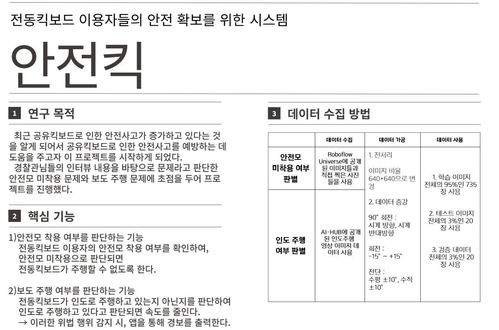
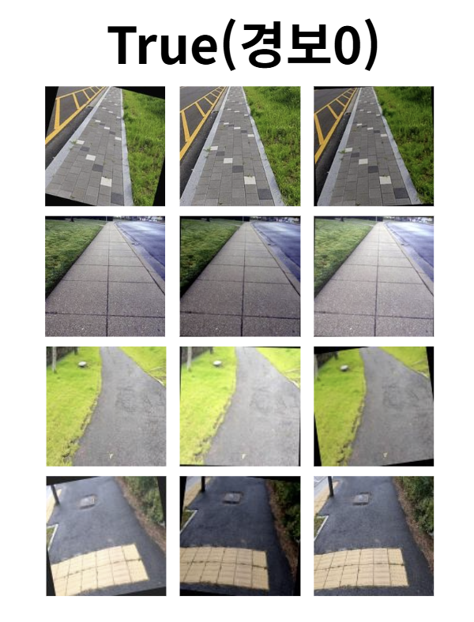
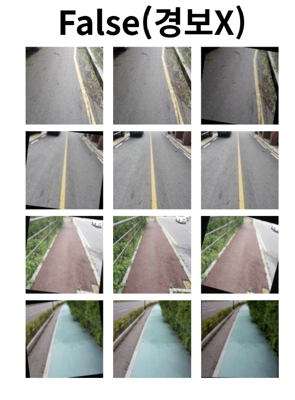
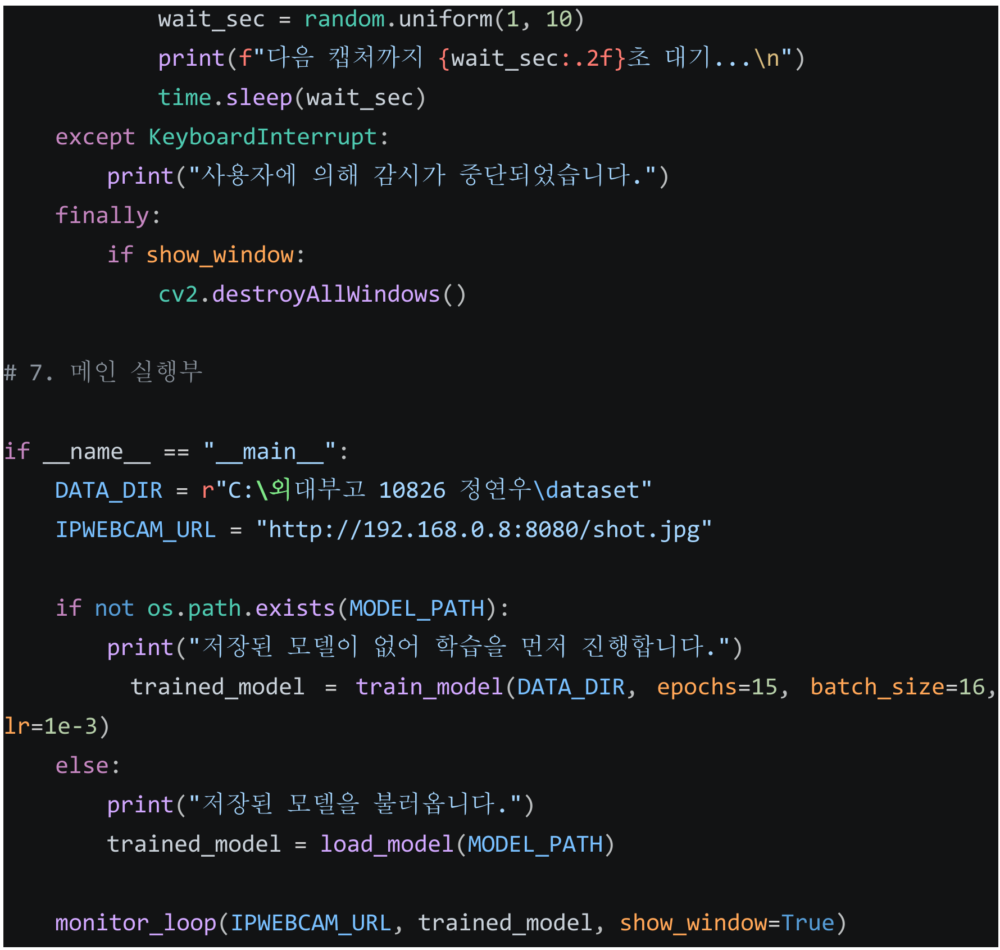
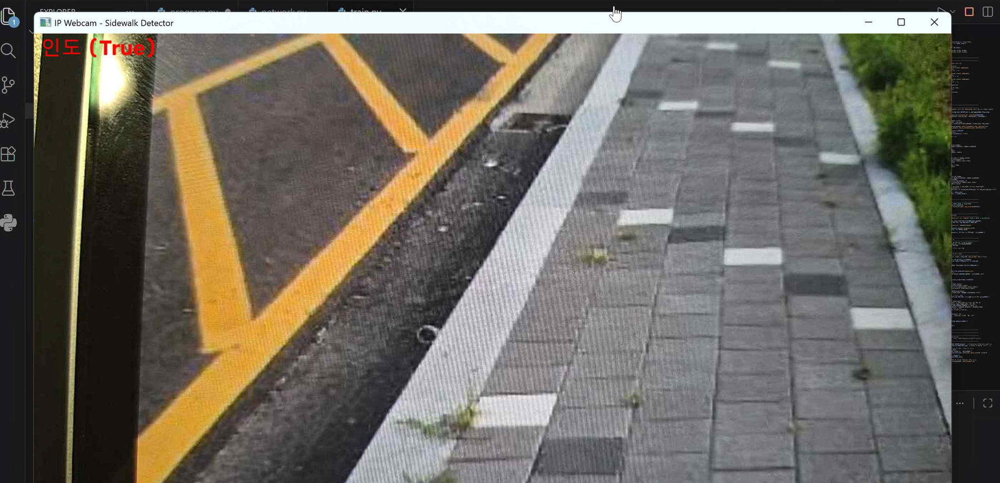

01 — Motivation
동기
공유킥보드는 빠르게 늘었지만, 어디로 다녀야 하는지에 대한 합의는 그만큼 자리 잡지 못했다. 인도 위를 달리는 킥보드를 기계가 알아볼 수 있다면 어떨까 — 이 프로젝트는 그 질문에서 시작했다.
문제 상황
최근 공유킥보드로 인한 안전사고가 늘고 있다는 것을 알게 되었다. 전동킥보드는 자전거보다 빠르고 자동차보다 작아서, 차도에서는 위험하고 인도에서는 위협이 된다. 특히 인도는 원래 보행자의 공간이므로, 그곳을 달리는 킥보드는 사고가 나지 않더라도 이미 보행자의 안전을 침해한다.
문제를 막연히 짐작하는 대신 현장의 이야기를 듣기로 했다. 경찰관 인터뷰를 통해 실제로 가장 자주 문제가 되는 두 가지를 확인했다.
- 안전모 미착용 — 사고가 났을 때 피해를 결정적으로 키우는 요인
- 보도(인도) 주행 — 사고를 만들어 내는 요인이자, 보행자와의 직접적인 충돌 원인
이 두 문제에 초점을 두고 안전킥 프로젝트를 진행했다. 이 사이트에서는 그중 인도주행 감지 부분을 다룬다.

왜 인도주행인가
개인형 이동장치(PM)는 원칙적으로 자전거도로로 다녀야 하고, 자전거도로가 없으면 차도의 가장자리로 통행한다. 보도 주행은 허용되지 않는다. 그런데도 인도 주행이 흔한 이유는 단속이 사실상 사람의 눈에만 의존하기 때문이다. 경찰이 보고 있는 그 자리에서만 규칙이 지켜진다면, 규칙은 사실상 없는 것과 같다.
여기서 이런 생각을 했다. 사람 대신 킥보드 자신이 자기가 어디를 달리는지 알 수 있다면, 단속은 상시적이 되고 경고는 즉각적이 된다. 위반을 적발해 처벌하는 방식이 아니라, 위반이 일어나는 순간에 알려 주는 방식이다.
인도와 차도는 사람 눈에 뚜렷이 다르게 보인다. 보도블록, 점자블록, 연석, 아스팔트, 차선 — 노면 자체가 이미 충분한 단서를 담고 있다. 그렇다면 킥보드에 달린 카메라가 노면을 한 장 찍는 것만으로도 판별이 가능하지 않을까? 위치 정보(GPS)는 오차가 몇 미터씩 나서 인도와 차도를 가르기 어렵지만, 노면 이미지는 바로 발밑을 본다.
이 프로젝트가 하는 일
- 인도 사진과 차도·자전거도로 사진을 모아 두 개의 클래스로 나눈 데이터셋을 만든다
- 합성곱 신경망(CNN)을 학습시켜 노면 이미지를 True(인도) / False(차도) 로 분류한다
- 휴대폰을 카메라로 삼아 실시간으로 프레임을 받아 판별하고, 인도로 판정되면 즉시 경고를 출력한다
구성은 다음과 같다. 02에서 데이터를 어떻게 모으고 가공했는지, 03에서 모델과 실시간 감시 코드를, 04에서 실행 결과와 남은 한계를, 05에서 실제 서비스로 확장할 때의 가능성과 조건을 다룬다.
02 — Dataset
데이터 수집
모델의 성능은 대부분 데이터에서 결정된다. 무엇을 True로 두고 무엇을 False로 둘 것인지, 그 경계를 어떻게 그었는지가 이 프로젝트에서 가장 중요한 선택이었다.
두 개의 클래스
이 문제는 이진 분류다. 킥보드가 지금 달리는 노면이 경보 대상인지 아닌지만 판단하면 되므로, 클래스를 둘로 두었다.
| 클래스 | 폴더명 | 포함하는 노면 | 동작 |
|---|---|---|---|
| True | True/ | 인도, 보도블록, 점자블록이 깔린 보행로 | 경보 출력 |
| False | False/ | 아스팔트 차도, 자전거도로(적색·청록색 포장 포함) | 경보 없음 |
PyTorch의 ImageFolder는 폴더 이름을 알파벳순으로 정렬해 라벨을 매긴다. False가 True보다 앞서므로 자동으로 False = 0, True = 1이 된다. 코드에서 pred_class == 1일 때 경보를 울리는 이유가 여기에 있다.
# 데이터셋 폴더 구조
dataset/
├── True/ # 라벨 1 — 인도 (경보 O)
│ ├── sidewalk_001.jpg
│ └── ...
└── False/ # 라벨 0 — 차도·자전거도로 (경보 X)
├── road_001.jpg
└── ...데이터 출처
- AI-HUB — 공개된 인도주행 영상 이미지 데이터. 실제 보행 시점에서 촬영된 것이라 킥보드 카메라의 시야각과 가깝다
- Roboflow Universe — 공개 이미지 데이터셋
- 직접 촬영 — 학교 주변의 인도, 차도, 자전거도로를 실제로 찍어 보완했다
직접 촬영분을 넣은 이유는 공개 데이터만으로는 우리 동네의 노면이 충분히 담기지 않기 때문이다. 지역마다 보도블록의 색과 무늬가 다르고, 자전거도로의 포장색도 다르다. 실제로 쓸 곳의 데이터를 일부라도 넣어 두는 편이 안전하다고 판단했다.
가장 신경 쓴 부분 — False에 무엇을 넣을 것인가
인도만 잔뜩 모으고 차도 사진 몇 장을 넣는 것으로는 부족하다. 모델이 엉뚱한 근거로 정답을 맞히는 일이 생기기 때문이다. 예를 들어 False가 회색 아스팔트뿐이라면, 모델은 “인도인지”가 아니라 “회색인지”만 배우게 된다.
그래서 False 클래스에 색과 질감이 인도와 헷갈리는 노면을 일부러 넣었다.
- 적색 포장 자전거도로 — 붉은 보도블록과 색이 비슷하다
- 청록색 포장 자전거도로 — 아스팔트가 아닌 평평한 컬러 포장이다
- 차선이 그어진 아스팔트 — 흰 선·노란 선이 보도블록의 줄눈과 헷갈릴 여지가 있다
이 노면들은 사람이 봐도 순간적으로 헷갈리는 것들이다. 이런 사례를 False에 넣어 두면 모델은 색만으로는 답을 낼 수 없게 되고, 블록의 이음새나 점자블록 같은 구조적 특징을 보도록 밀린다.


각 행의 첫 이미지가 원본이고, 둘째·셋째는 같은 이미지를 증강 처리한 결과다.
가공 ① 전처리
수집한 이미지는 크기와 비율이 제각각이었다. 이를 640×640 정사각형으로 통일해 데이터셋을 정리했다. 학습 단계에서는 여기서 다시 128×128로 줄여 모델에 넣는다.
128까지 줄인 것은 계산량 때문이다. 이미지 한 변을 절반으로 줄이면 픽셀 수는 4분의 1이 되므로, 640을 그대로 쓰는 것보다 25배가량 가볍다. 노면의 무늬는 세밀한 글자와 달리 크게 줄여도 남는 편이라 판단했다.
마지막으로 픽셀값을 정규화했다. ImageNet의 평균·표준편차를 그대로 사용했다.
각 채널에서 평균을 빼고 표준편차로 나누면 값의 범위가 0 근처로 모인다. 이렇게 하면 학습이 더 안정적으로 진행된다.
TRANSFORM = transforms.Compose([
transforms.Resize((IMG_SIZE, IMG_SIZE)), # 128 × 128
transforms.ToTensor(),
transforms.Normalize(mean=[0.485, 0.456, 0.406],
std=[0.229, 0.224, 0.225]),
])가공 ② 데이터 증강
직접 모을 수 있는 사진의 수에는 한계가 있다. 사진이 적으면 모델은 그 사진들을 통째로 외워 버리고(과적합), 조금만 다른 상황에서 틀린다. 이를 막기 위해 원본 한 장에서 변형된 이미지를 여러 장 만들어 냈다.
| 기법 | 범위 | 이 변형이 모사하는 실제 상황 |
|---|---|---|
| 90° 회전 | 시계 / 반시계 방향 | 카메라 거치 방향이 다르게 장착된 경우 |
| 회전 | −15° ~ +15° | 주행 중 흔들림, 코너를 돌 때의 기울어짐 |
| 전단(shear) | 수평 ±10°, 수직 ±10° | 카메라가 노면을 비스듬히 내려다볼 때의 원근 왜곡 |
증강 기법을 아무거나 고른 것이 아니다. 킥보드에 달린 카메라가 실제로 겪는 변형만 골랐다. 킥보드는 흔들리고 기울어지고 비스듬히 달리므로 회전과 전단은 반드시 일어난다. 반대로 상하 반전 같은 변형은 넣지 않았다. 노면 사진이 뒤집히는 상황은 현실에서 일어나지 않기 때문이다.
증강은 데이터를 늘리는 기술처럼 보이지만, 실제로 하는 일은 모델에게 “이 정도 변형은 같은 것으로 봐라”라고 알려 주는 것이다. 15도 기울어진 인도도 여전히 인도라는 사실을, 모델은 스스로 알지 못한다. 증강으로 직접 가르쳐 주어야 한다.
03 — Implementation
코드로 구현
학습된 모델 하나와, 그 모델에 계속 사진을 물어다 주는 루프 하나. 프로그램은 크게 이 두 부분으로 이루어진다.
전체 흐름
[그림 4] 프로그램의 순환 구조. 학습은 처음 한 번만 하고, 이후에는 저장된 모델을 불러와 이 루프만 돈다.
모델 — SimpleCNN
노면 판별에는 합성곱 신경망(CNN)을 썼다. 일반 신경망이 픽셀을 하나씩 따로 보는 것과 달리, CNN은 작은 필터를 이미지 위에서 미끄러뜨리며 주변 픽셀과의 관계를 읽는다. 보도블록의 이음새나 점자블록의 돌기처럼 “무늬”로 존재하는 특징을 잡아내려면 이 방식이 맞다.
| 단계 | 연산 | 출력 크기 | 하는 일 |
|---|---|---|---|
| 입력 | — | 3 × 128 × 128 | RGB 3채널 이미지 |
| 블록 1 | Conv(3→16) + ReLU + MaxPool | 16 × 64 × 64 | 선, 경계 같은 기초 무늬 |
| 블록 2 | Conv(16→32) + ReLU + MaxPool | 32 × 32 × 32 | 블록의 이음새, 반복 패턴 |
| 블록 3 | Conv(32→64) + ReLU + MaxPool | 64 × 16 × 16 | 노면 전체의 성격 |
| 펼치기 | Flatten | 16,384 | 1차원으로 나열 |
| 분류기 | Linear + ReLU + Dropout(0.3) | 128 | 특징 압축, 과적합 억제 |
| 출력 | Linear(128→2) | 2 | False / True 점수 |
블록을 지날 때마다 이미지는 절반으로 작아지고 채널은 두 배로 늘어난다. 공간 정보를 줄이는 대신 “무엇이 보이는가”에 대한 정보를 늘려 가는 구조다. MaxPool은 2×2 영역에서 가장 큰 값만 남기는 연산으로, 위치가 조금 달라져도 같은 결과가 나오게 해 준다.
class SimpleCNN(nn.Module):
def __init__(self, num_classes: int = 2):
super().__init__()
self.features = nn.Sequential(
nn.Conv2d(3, 16, kernel_size=3, padding=1),
nn.ReLU(inplace=True),
nn.MaxPool2d(2), # 128 → 64
nn.Conv2d(16, 32, kernel_size=3, padding=1),
nn.ReLU(inplace=True),
nn.MaxPool2d(2), # 64 → 32
nn.Conv2d(32, 64, kernel_size=3, padding=1),
nn.ReLU(inplace=True),
nn.MaxPool2d(2), # 32 → 16
)
self.classifier = nn.Sequential(
nn.Flatten(),
nn.Linear(64 * 16 * 16, 128),
nn.ReLU(inplace=True),
nn.Dropout(0.3),
nn.Linear(128, num_classes),
)
def forward(self, x):
x = self.features(x)
x = self.classifier(x)
return x학습
손실 함수는 CrossEntropyLoss, 최적화 기법은 Adam(학습률 1e-3)을 썼다. 데이터를 8:2로 나눠 학습용과 검증용으로 쓰고, 매 epoch마다 검증 정확도를 함께 출력하도록 했다. 학습 정확도만 보면 외운 것인지 배운 것인지 알 수 없기 때문이다.
# 학습/검증 8:2 분할
val_size = int(len(full_dataset) * 0.2)
train_size = len(full_dataset) - val_size
train_dataset, val_dataset = random_split(full_dataset, [train_size, val_size])
model = SimpleCNN(num_classes=2).to(DEVICE)
criterion = nn.CrossEntropyLoss()
optimizer = optim.Adam(model.parameters(), lr=1e-3)
for epoch in range(1, epochs + 1):
model.train()
for images, labels in train_loader:
images, labels = images.to(DEVICE), labels.to(DEVICE)
optimizer.zero_grad()
outputs = model(images)
loss = criterion(outputs, labels)
loss.backward()
optimizer.step()학습이 끝나면 sidewalk_cnn.pth로 저장한다. 다음 실행부터는 이 파일이 있는지 먼저 확인하고, 있으면 학습을 건너뛰고 바로 불러온다. 학습은 한 번, 사용은 매번이라는 구조다.
카메라 — 휴대폰을 웹캠으로
킥보드에 달 전용 카메라가 없으므로, 휴대폰의 IP Webcam 앱을 카메라로 썼다. 이 앱은 휴대폰 카메라 화면을 같은 와이파이 안의 다른 기기에서 볼 수 있게 해 준다. 지정된 주소로 요청을 보내면 그 순간의 화면이 이미지로 돌아온다.
def get_frame_from_ipwebcam(snapshot_url: str, timeout: float = 10.0):
response = requests.get(snapshot_url, timeout=timeout)
response.raise_for_status()
img_array = np.frombuffer(response.content, dtype=np.uint8)
frame = cv2.imdecode(img_array, cv2.IMREAD_COLOR)
if frame is None:
raise ValueError("IP Webcam으로부터 이미지를 디코딩하지 못했습니다.")
return frame여기서 한 가지 주의할 점이 있었다. OpenCV는 이미지를 BGR 순서로 다루는데 PyTorch 쪽은 RGB를 기대한다. 이 변환을 빼먹으면 빨강과 파랑이 뒤바뀐 채로 모델에 들어가서, 학습 때와 전혀 다른 색을 보게 된다. 적색 자전거도로가 청록색으로 보이는 셈이다.
def preprocess_frame(frame_bgr):
frame_rgb = cv2.cvtColor(frame_bgr, cv2.COLOR_BGR2RGB) # 색 순서 교정
pil_img = Image.fromarray(frame_rgb)
tensor = TRANSFORM(pil_img)
return tensor.unsqueeze(0) # 배치 차원 추가판별과 경보
모델이 내놓는 것은 확률이 아니라 두 개의 점수다. 이를 확률로 바꾸는 것이 softmax다.
두 값을 모두 양수로 만들고 합이 1이 되게 나눈다. 결과적으로 “인도일 확률 99.99%” 같은 확신도를 함께 얻을 수 있다. 확신도는 단순한 참고값이 아니라, 나중에 “몇 % 이상일 때만 경보를 울릴지”를 정하는 기준이 된다.
input_tensor = preprocess_frame(frame).to(DEVICE)
with torch.no_grad(): # 추론에는 기울기 계산이 필요 없음
outputs = model(input_tensor)
probs = torch.softmax(outputs, dim=1)
pred_class = int(torch.argmax(probs, dim=1).item())
confidence = float(probs[0, pred_class].item())
print(f"판별 결과: {CLASS_NAMES[pred_class]} (확신도 {confidence:.2%})")
if pred_class == 1: # 1 = True = 인도
print("[경고] 킥보드가 인도 위를 주행 중인 것으로 감지되었습니다!")감시 루프 — 왜 난수 간격인가
판별을 한 뒤 1초에서 10초 사이의 무작위 시간을 기다렸다가 다시 촬영한다. 일정 간격이 아니라 난수로 정한 데에는 이유가 있다.
- 자원 절약 — 매 프레임을 판별하면 통신량과 배터리 소모가 크다. 노면은 몇 초 사이에 급변하지 않으므로 띄엄띄엄 봐도 충분하다
- 예측 불가능성 — 간격이 일정하면 그 주기를 알아내 피하는 것이 가능해진다. 언제 볼지 모르면 항상 지켜야 한다
wait_sec = random.uniform(1, 10)
print(f"다음 캡처까지 {wait_sec:.2f}초 대기...\n")
time.sleep(wait_sec)카메라 연결이 끊겨도 프로그램이 멈추지 않도록 예외 처리를 넣었다. 프레임을 못 받으면 경고만 남기고 3초 뒤 다시 시도한다. 실제로 달리는 킥보드에서는 통신이 불안정할 수밖에 없으므로, 한 번의 실패로 감시 전체가 중단되면 안 된다.
try:
frame = get_frame_from_ipwebcam(snapshot_url)
except Exception as e:
print(f"[경고] IP Webcam 프레임을 가져오지 못했습니다: {e}")
time.sleep(3)
continue
04 — Results & Discussion
결과와 고찰
프로그램은 의도한 대로 동작했다. 다만 잘 맞혔다는 사실보다 어떻게 맞혔는지 모른다는 사실이 더 중요한 문제로 남았다.
실행 결과
저장된 모델을 불러와 실시간 감시를 시작하면 다음과 같이 출력된다.
OpenCV 창에는 카메라 화면 위에 판별 결과가 얹혀 표시된다. 인도로 판정되면 빨간색, 차도면 초록색이다. 화면을 보는 사람이 모델이 무엇을 보고 있는지 동시에 확인할 수 있도록 한 장치다.

그림 6의 화면은 이 프로젝트의 목표를 잘 보여 준다. 노란 차선과 아스팔트가 왼쪽에 있고, 보도블록이 오른쪽에 있는 경계 지점인데도 모델은 인도로 판별했다. 화면의 대부분을 차지하는 것이 보도블록이므로 타당한 판단이다.
학습 로그에 남은 최종 train_acc / val_acc 값과 epoch 수를 여기에 적어 두면 좋습니다. [Epoch 15/15] train_loss=... train_acc=... val_acc=... 형태로 출력된 마지막 줄을 그대로 옮기면 됩니다.
고찰 ① 확신도 100%는 좋은 신호가 아니다
가장 눈에 띈 것은 확신도가 99.99%, 100.00%로 나온다는 점이었다. 처음에는 잘 학습된 증거라고 생각했지만, 다시 보니 경계해야 할 신호에 가깝다.
사람이라면 애매한 노면 앞에서 망설인다. 반면 이 모델은 어떤 사진을 줘도 거의 100%로 답한다. 이는 모델이 구분하기 쉬운 단서 하나에 지나치게 의존하고 있을 가능성을 뜻한다. 검증 데이터가 학습 데이터와 같은 장소·같은 날 촬영된 것이라면, 검증 정확도가 높게 나와도 그것은 처음 보는 환경에서의 성능을 보장하지 않는다.
지금의 검증 방식은 random_split으로 전체 데이터를 무작위로 나눈 것이다. 그런데 증강 이미지는 원본과 거의 같은 사진이므로, 원본이 학습셋에, 그 증강본이 검증셋에 들어갈 수 있다. 이 경우 모델은 이미 본 사진을 다시 맞히는 셈이 되어 검증 정확도가 실제보다 높게 나온다. 증강은 반드시 학습셋을 나눈 뒤에 적용하거나, 원본 단위로 분할해야 한다.
고찰 ② 모델은 무엇을 보고 판단했는가
이 모델은 답만 내놓을 뿐 근거를 말해 주지 않는다. 인도라고 판단한 이유가 보도블록의 이음새 때문인지, 단지 화면 색이 밝아서인지 알 수 없다.
02번 탭에서 적색·청록색 자전거도로를 False에 넣은 것은 이 문제를 줄이기 위한 조치였다. 색만으로는 답이 나오지 않게 만들어 둔 것이다. 다만 이것으로 충분한지는 확인하지 못했다. Grad-CAM 같은 시각화 기법으로 모델이 이미지의 어느 부분을 보고 판단했는지 열어 보는 것이 다음 단계다.
고찰 ③ 한 장으로 판단하는 것의 위험
현재는 프레임 한 장으로 즉시 결론을 낸다. 그런데 실제 주행에서는 다음과 같은 상황이 계속 나온다.
- 횡단보도를 건너는 중 — 규정상 내려서 끌고 가야 하는 구간이지만 노면은 차도다
- 연석을 넘는 순간 — 화면에 인도와 차도가 반씩 잡힌다
- 그림자·젖은 노면·야간 — 노면의 색과 질감이 학습 데이터와 크게 달라진다
- 보행자나 다른 킥보드가 화면을 가릴 때 — 노면 자체가 거의 보이지 않는다
이런 순간의 한 장으로 경보를 울리면 오탐이 잦아진다. 해결책은 어렵지 않다. 최근 N번의 판별 중 M번 이상이 인도일 때만 경보를 울리는 방식으로 바꾸면 된다. 잠깐의 오판은 걸러지고, 실제로 인도를 계속 달리는 경우만 남는다.
확신도를 기준으로 쓰기
softmax 확신도를 활용하는 방법도 있다. 확신도가 낮은 판별은 “모르겠다”로 처리하고 경보를 보류하는 것이다. 지금 코드는 확신도를 출력만 하고 판단에는 쓰지 않는데, 여기에 임계값을 두면 애매한 상황에서의 오탐을 줄일 수 있다.
고찰 ④ 최대 10초의 공백
난수 대기는 자원을 아끼는 좋은 방법이지만, 대가가 있다. 최악의 경우 인도에 올라선 뒤 10초가 지나서야 감지된다. 시속 20km로 달린다면 그 사이 약 55m를 이동한다. 감지 목적으로는 너무 긴 거리다.
개선한다면 적응형 간격이 맞다. 차도로 안정적으로 판별되는 동안에는 간격을 길게 두고, 인도가 한 번이라도 감지되면 간격을 1초 이하로 좁혀 집중적으로 확인하는 방식이다. 평소에는 자원을 아끼고 필요할 때만 촘촘히 보는 셈이다.
고찰 ⑤ 128×128로 줄이면서 잃은 것
이미지를 128×128로 줄인 것은 속도를 위한 선택이었지만, 그 과정에서 점자블록의 돌기나 블록의 미세한 줄눈 같은 세부가 뭉개진다. 인도를 가장 확실하게 알려 주는 단서가 오히려 축소 과정에서 사라지는 것이다. 입력 크기를 키우거나, 화면 전체 대신 바퀴 앞쪽 노면만 잘라서 넣는 방식을 시험해 볼 만하다.
개선 방향 정리
| 영역 | 현재 | 개선안 |
|---|---|---|
| 데이터 분할 | 증강 후 무작위 분할 | 원본 단위로 먼저 분할한 뒤 학습셋만 증강 |
| 데이터 다양성 | 맑은 날 주간 위주 | 야간, 비 온 뒤, 눈, 낙엽, 그림자 조건 추가 |
| 모델 | Conv 3층 직접 설계 | MobileNet 등 사전학습 모델 전이학습 |
| 판정 방식 | 1프레임 즉시 판정 | N회 중 M회 규칙 + 확신도 임계값 |
| 촬영 간격 | 1~10초 균등 난수 | 상황에 따라 좁혀지는 적응형 간격 |
| 검증 | 정확도 수치만 확인 | Grad-CAM으로 판단 근거 시각화 |
모델을 만드는 일보다 모델을 의심하는 일이 어려웠다. 정확도가 높게 나오면 성공한 것처럼 보이지만, 그 숫자가 어떻게 만들어졌는지 따져 보면 대부분 설명이 필요했다. 100%라는 확신도가 오히려 문제의 실마리였다는 점이 이 탐구에서 가장 인상 깊은 부분이다.
05 — Applications
활용 가능성
이 프로그램이 답하는 질문은 하나다 — 지금 이 킥보드는 인도 위에 있는가. 그 답을 어디에 연결하느냐에 따라 쓰임새는 크게 달라진다.
① 킥보드 단말기에 직접 탑재
가장 직접적인 적용은 공유킥보드 업체의 단말기에 카메라와 이 모델을 함께 넣는 것이다. 포스터의 핵심 기능이 이 형태다.
1차 인도 감지 → 안내음과 앱 알림 (“인도 주행 중입니다”)
2차 계속 인도로 판별 → 최고 속도를 점진적으로 제한
3차 반복 위반 → 이용 기록에 반영, 누적 시 이용 제한
중요한 것은 즉시 정지시키지 않는다는 점이다. 달리는 중에 갑자기 멈추면 그 자체가 사고를 만든다. 속도를 서서히 낮추는 방식이어야 하고, 안내는 감속보다 먼저 나가야 한다. 처벌이 아니라 알림이 목적이기 때문이다.
② 지자체의 도로 정책 자료
감지 기록이 쌓이면 그 자체가 데이터가 된다. 어느 구간에서 인도 주행이 자주 감지되는지 지도 위에 표시하면 인도주행 빈발 구간 지도가 만들어진다.
여기서 관점이 한 번 뒤집힌다. 특정 구간에서 인도 주행이 유독 잦다면, 그것은 이용자의 문제가 아니라 그 구간에 자전거도로가 없거나 차도가 지나치게 위험하다는 뜻일 수 있다. 규칙을 어기는 사람을 찾는 데이터가 아니라, 규칙을 지키기 어려운 장소를 찾는 데이터로 쓰는 것이다.
- 자전거도로 신설·연장의 우선순위 결정
- 인도와 차도의 경계가 모호한 구간 파악
- 주차 구역 배치 조정 — 자전거도로에 인접한 반납 지점 확보
③ 사고 조사와 보험
전동킥보드 사고에서는 어디를 달리고 있었는지가 과실 판단의 중요한 근거가 된다. 주행 기록이 남아 있으면 사고 당시 인도였는지 차도였는지를 확인할 수 있다. 다만 이 용도는 개인정보와 직결되므로, 아래의 조건들이 먼저 갖춰져야 한다.
④ 같은 구조로 확장 가능한 것들
이 프로그램의 뼈대는 카메라 → 분류 모델 → 조건부 경보다. 분류 대상만 바꾸면 다른 문제에도 그대로 쓸 수 있다.
| 항목 | 보는 대상 | 필요한 추가 작업 |
|---|---|---|
| 안전모 착용 | 이용자의 머리 | 카메라를 이용자 쪽으로, 객체 검출 모델 필요 |
| 2인 탑승 | 발판 위 사람 수 | 하중 센서와 병행하면 정확도가 크게 오름 |
| 역주행 | 차선과 진행 방향 | 방향 정보 필요 — GPS·자이로 센서 병행 |
| 불법 주차 | 반납 시점의 주변 노면 | 반납 버튼과 연동, 실시간 감시 불필요 |
이 중 불법 주차 감지가 현실성이 가장 높다. 반납하는 순간에만 한 장 찍으면 되므로 실시간 처리가 필요 없고, 계산 부담도 거의 없다. 넘어진 킥보드가 보도를 막는 문제는 인도 주행만큼이나 자주 제기되는 민원이다.
실제로 쓰려면 먼저 해결해야 할 것
개인정보 — 카메라를 단다는 것의 무게
도로를 향한 카메라에는 행인의 얼굴, 차량 번호판, 주변 상황이 함께 찍힌다. 따라서 ① 판별은 기기 안에서 처리하고(온디바이스), ② 원본 이미지는 저장하거나 전송하지 않으며, ③ 서버로는 “인도/차도”라는 판별 결과와 시각·위치만 보내야 한다. 이 프로젝트가 지금 사진을 네트워크로 주고받는 구조인 것은 학습·실험 단계이기 때문이며, 실제 서비스에서는 그대로 쓸 수 없다.
오탐이 만드는 위험
04번 탭에서 다룬 오탐 문제는 실제 서비스에서 더 무거워진다. 차도를 달리는 중에 인도로 잘못 판정되어 감속이 걸리면, 뒤따르는 자동차에게는 갑작스러운 위험이 된다. 따라서 감속은 항상 점진적이어야 하고, 확신도가 낮거나 판별에 실패했을 때는 아무 조치도 하지 않는 것이 안전한 기본값이다.
기술적 조건
- 경량화 — 킥보드 단말기는 성능이 제한적이다. 모델을 줄이고 정밀도를 낮추는(양자화) 작업이 필요하다
- 전력 — 카메라와 추론은 배터리를 쓴다. 04번의 적응형 간격이 여기서 실질적 의미를 갖는다
- 내구성 — 비, 먼지, 흔들림, 렌즈 오염. 렌즈가 더러워졌을 때 이를 인지하고 감지를 중단하는 기능도 필요하다
- 야간 — 지금 데이터는 주간 위주다. 야간 주행이 적지 않으므로 별도의 데이터 확보가 필수적이다
마무리
이 프로젝트는 노면 사진 한 장으로 인도와 차도를 가르는 작은 모델에서 출발했다. 정확도는 높게 나왔지만, 실제로 배운 것은 그 숫자를 어떻게 의심해야 하는지에 가까웠다.
그래도 방향은 분명하다. 인도 주행을 막는 가장 좋은 방법은 적발이 아니라, 이용자가 그 사실을 그 자리에서 알게 하는 것이다. 대부분의 사람은 규칙을 어기려고 인도로 올라가는 것이 아니라, 차도가 무섭거나 자전거도로가 없어서 그렇게 한다. 그렇다면 이 프로그램이 모은 데이터가 향해야 할 곳은 이용자에 대한 처벌이 아니라 안전하게 달릴 수 있는 길을 만드는 일이라고 생각한다.
사용한 자료와 도구
- AI-HUB — 인도주행 영상 이미지 데이터
- Roboflow Universe — 공개 이미지 데이터셋
- 직접 촬영한 인도·차도·자전거도로 이미지
- PyTorch, torchvision — 모델 학습 및 추론
- OpenCV, Pillow, NumPy — 이미지 처리
- IP Webcam (Android) — 실시간 프레임 수신
- 경찰관 인터뷰 — 문제 정의 단계